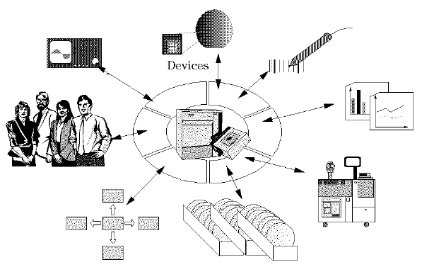

The role of the application model
The application model provides for the communication of all production floor entities - such as operators, prober/handlers, barcode readers - with the test program and the tester, see the figure below.

This communication comprises, amongst other things, handling synchronous events like testing of individual devices, asynchronous events like inputs/interrupts from operators, or the handling of all areas of data logging.
Different users of the system (operators, supervisors or engineers) have different objectives and tasks they need to perform with the tester, at different points in time; once again this is completely supported by the application model.